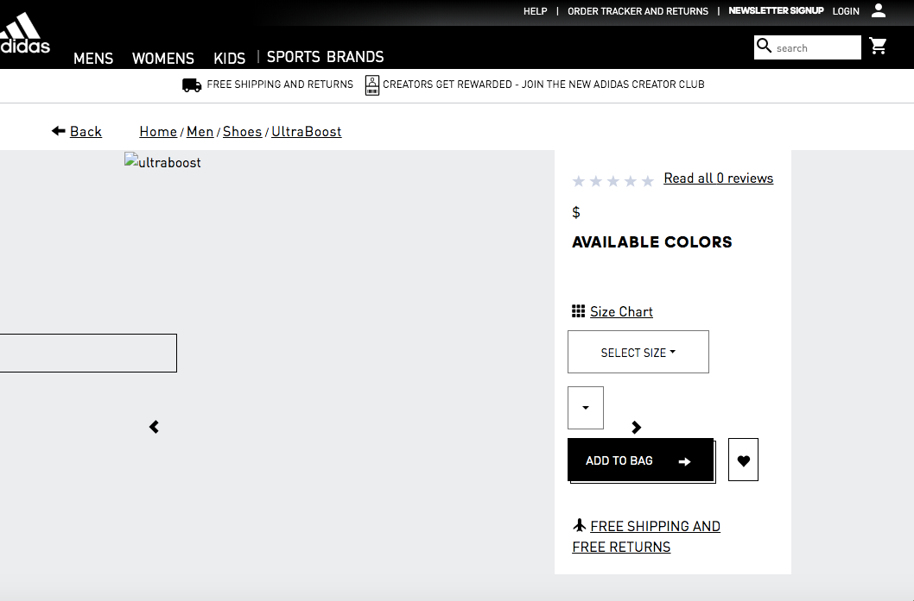
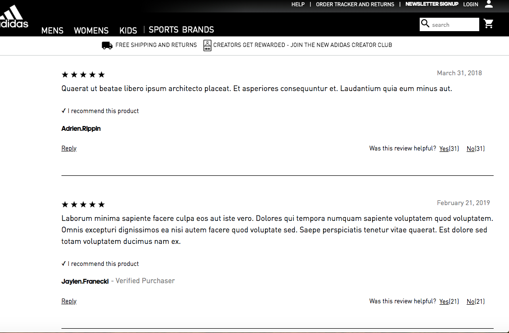

Abibas
E-commerce App Focusing on Sportswear


At Abibas, I worked on a team with four remote engineers. Our challenge for this project was to inherit an existing codebase of a popular e-commerce website (Adidas) and re-work the backend in order to accommodate more user traffic. Working on my own isolated module, I was able to reduce PostgreSQL query time from approximately 1200 ms to approximately 0.15 ms. I implemented testing on both my individual service (the reviews component pictured below) and the proxy server with New Relic and Artillery.
The tech stack I utilized for this project included Node.js, Express, Webpack, Cassandra, PostgreSQL, New Relic and Artillery. Abibas was deployed using an AWS ec2 instance.